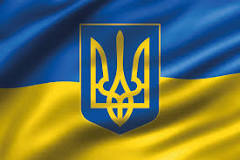

Історія України, її культура, суспільство, міста, села та природа сповнені див та приголомшливих фактів, які часом не знають самі українці. Дізнайтеся більше цікавих фактів про Україну, які точно здивують вас

Україна має багатовікову історію за час свого існування Україна пройшла багато етапів становлення, які закарбували характер та світосприйняття сучасних українців. Крім цього, багата культурна спадщина та дивовижна природа, роблять Україну унікальною країною, яка приховує у собі незліченну кількість приголомшливих фактів. Підтверджують це тисячі іноземців, які приїздять познайомитись з Україною навіть під час війни.
Розповідаємо найцікавіші факти про Україну, які здивують не тільки іноземців, які не чули про країну раніше, але й українців.
Вражаючі факти про культуру та історію України
- Перша у світі конституція, в які окреслили права громадян та уряду, була розроблена та введена в дію у 1710 році українським гетьманом Пилипом Орликом. Для порівняння, конституція США, була розроблена прийнята у 1787 році.
- Запорізька Січ — суспільно-політична та військово-адміністративна організація українського козацтва, що була заснована у 1553-1554 роках, сьогодні вважається одним з перших демократичних утворень у світі.
- З 12 лавр світу 4 знаходяться в Україні: це Києво-Печерська лавра (Київ, існує з 1051 року), Почаївська лавра (Почаїв Тернопільської області, з 1833), Свято-Успенська Святогірська лавра (Святогірськ, Донецької області (отримала статус лаври у 2004 році) та Свято-Успенська Унівська лавра студійського уставу (Унів з 1898)).
- Українські народні пісні стали підґрунтям для створення багатьох світових музичних шедеврів. Наприклад, композиція “SummerTime” Джорджа Гершвіна була написана на основі української колискової “Ой, ходить сон коло вікон”, яку він почув у виконанні Національного хору України під керівництвом Олександра Кошица.
- Україна відмовилася від третього у світі (після США та РФ) за величиною арсеналу ядерної зброї. У момент проголошення незалежності, на території України було розташовано більш як 1000 ядерних боєголовок ракет.
- Найстародавніша у світі мапа, вибита на кістці мамонта, а також найстародавніше поселення Homo Sapiens знайдені в Україні, у селі Межиріччя Рівненської області. Їм 14,5-15 тисяч років.
- На території України знаходиться цивілізаційна колиска світу, старша за Єгипетські піраміди та Стоухендж – комплекс Кам'яна могила у Запорізькій області.

Дивовижні факти про природу та ресурси України
- У 1929 році СРСР заявила, що на території України зосереджено близько 60% від усіх розвіданих запасів газу, після чого країна стала одним з найбільших експортерів блакитного палива у Європу на певний проміжок часу. А сьогодні Україна посідає 3 місце за кількістю розвіданих даних сланцевого газу в Європі, випереджають її тільки Польща та Франція.
- Україна має найбільший запас марганцевої руди у світі, 2,3 млрд тонн або близько 11% від усіх покладів на Землі.
- Українська печера “Оптимістична” – є найдовшою гіпсовою печерою у світі та другою за протяжністю після “Мамонтової печери” в США.
- На території України зосереджено 1/4 всіх запасів чорнозему на Землі.
- Єдина у світі підводна річка знаходиться у Чорному морі. Якби вона була на суші, то займала б шосте місце за обсягами води, що переносить (22 тис. кубічних метрів на секунду).
- В Україні є свої Мальдіви – дивовижні пляжі з білим піском та прозорим блакитним морем. Зауважимо що місцева флора й фауна занесені до Червоної книги, а також тут раніше жили мустанги й верблюди.